AI Writing
Writing in the ChatGPT AI Era
2025-11-08
History of Document Languages and Tools
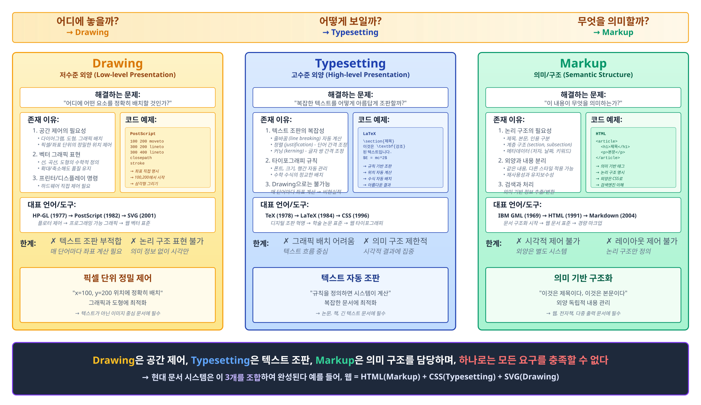
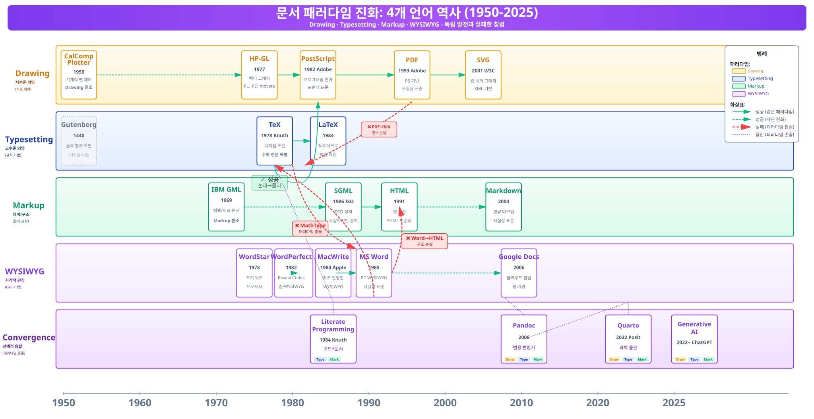
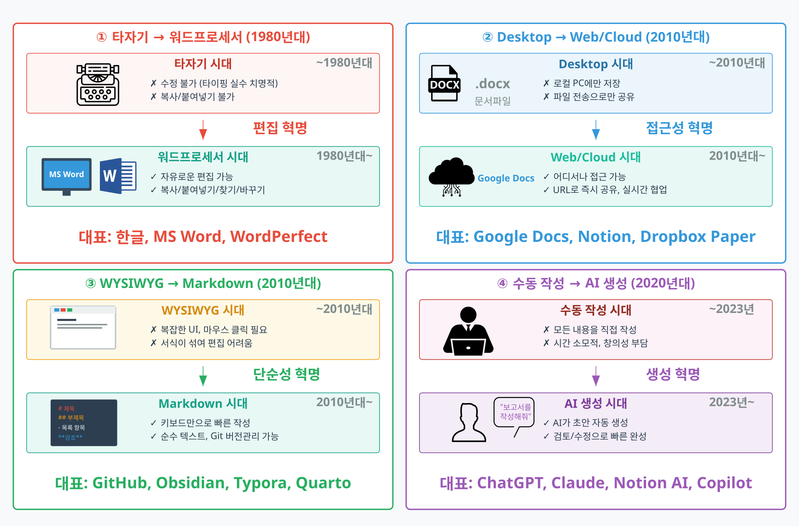

문서 5단계 진화
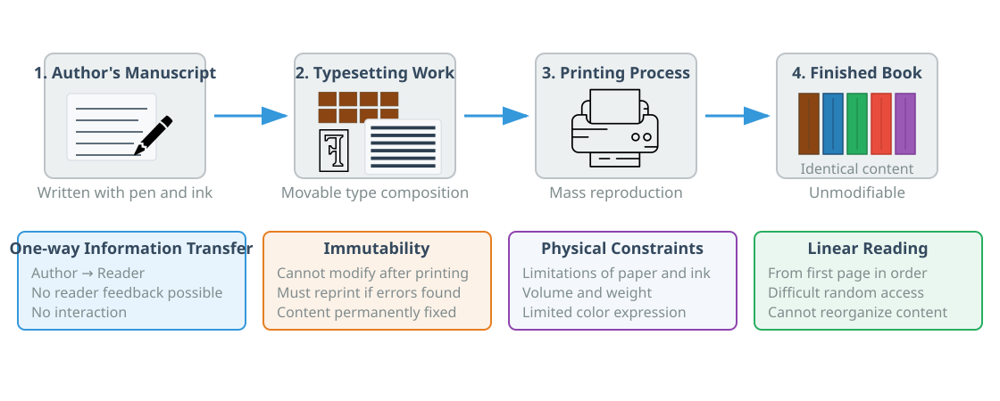
종이 문서 (고전): 수작업 타이핑
• 인쇄 → 복사 → 배포
• 선형적 작업 과정
• 수정의 어려움
• 물리적 제약
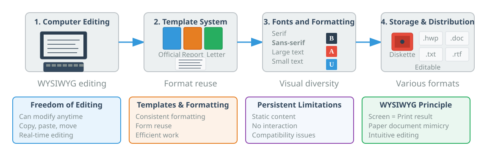
디지털 문서 (1980s-1990s): 워드프로세서 등장 (한글, MS Word)
• WYSIWYG 편집
• 디지털 저장 및 수정 용이
• 템플릿 활용 가능
• 글꼴과 서식 다양화
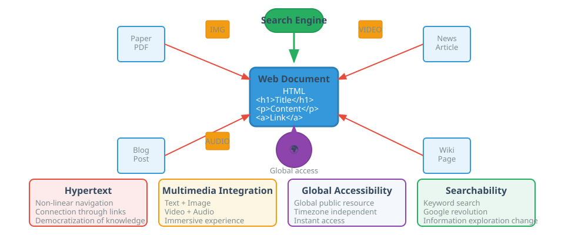
웹 문서 (1990s-2000s): 하이퍼텍스트 (링크를 통한 지식 연결)
• 멀티미디어 통합
• 전역 접근성
• 검색 가능성
• 지식의 민주화

인터랙티브 문서 (2010s): 실행 가능 코드 (R Markdown, Jupyter)
• 재현 가능한 연구
• 반응형 인터페이스
• 탐색 가능한 설명
• 문학적 프로그래밍 실현
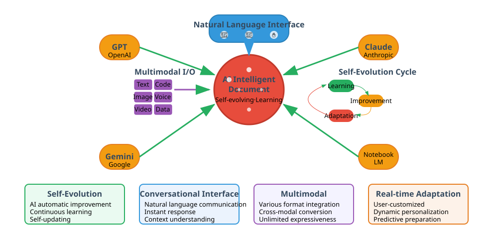
AI 지능형 문서 (2020s~): 자가 진화하는 문서
• 대화형 인터페이스
• 멀티모달 통합 (텍스트, 음성, 비디오)
• 실시간 팩트체크 및 검증
• 개인화된 맞춤형 콘텐츠
주요 사례: NotebookLM (문서→팟캐스트/비디오) • Claude Artifacts (자연어→웹앱) • ChatGPT Canvas (대화형 편집)
문서 코드화 사례: 코로나19 대시보드
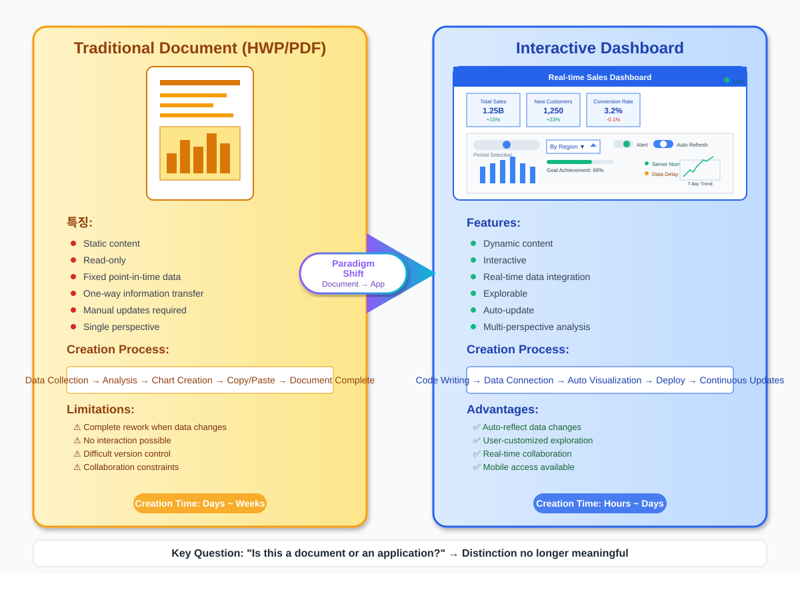


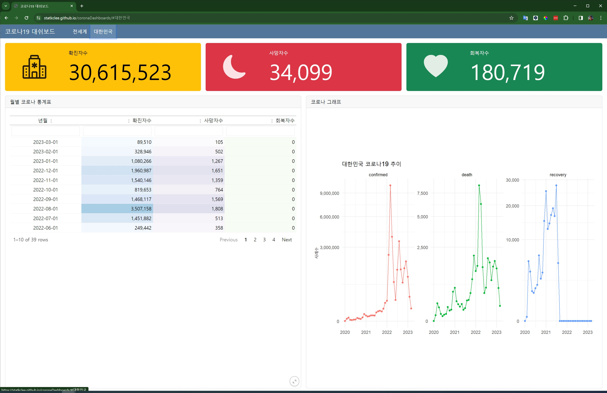
문서 구성요소


디지털 AI 글쓰기

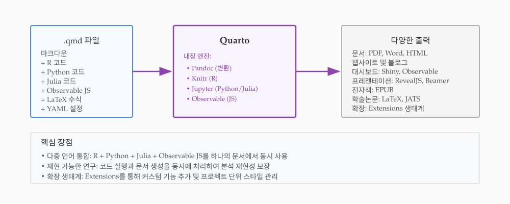
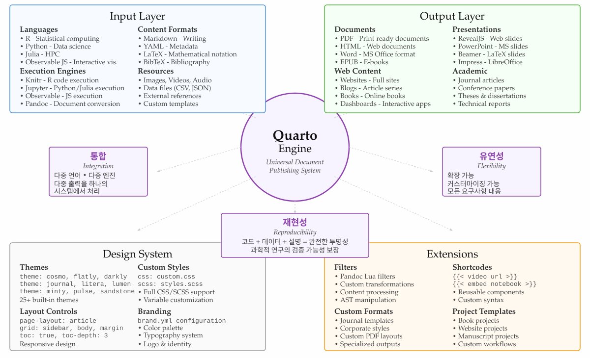
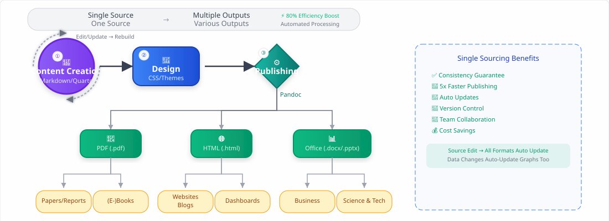